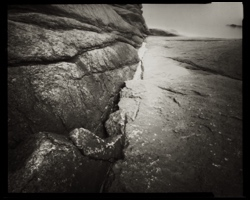
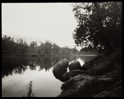
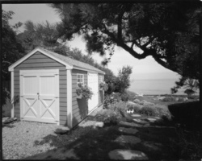
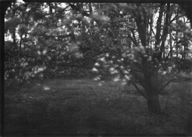
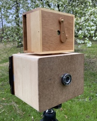
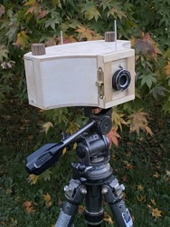

| Pinhole Photography | ||
|---|---|---|
|
In early 2018 I had an urge to revisit analog photo processes, built a simple pinhole camera to use 4x5-inch sheet film, and tried a few initial exposures in the backyard using paper negatives instead of film. The results were encouraging enough for me to press on, and I continued to experiment with paper negatives off and on over the next several months. Click here to see my first test image.
The following summer I ordered a box of Ilford FP4 film, and took the camera on a five-day canoe expedition through the Adirondacks with Gryffin's Boy Scout troop. These results were encouraging, and are linked below. I have since built two more pinhole cameras, and other ideas are in the works. For those new to this realm, pinhole cameras typically use a thin piece of metal pierced with a very small hole instead of a lens, to project an image onto the film or digital sensor. And yes, the hole can be made with a common pin, hence the name. Pinhole cameras can be as simple as a light tight cardboard box, using a piece of heavy aluminum foil taped over a hole cut in the cardboard. I've opted for more durability and convenience, while others have made much larger cameras by blacking out an entire room, save for a small aperture in the window covering. Regardless of size, complexity, or materials used, pinhole cameras all work using the same basic principle. A few moments with Google will reveal a very deep and seductive rabbit hole, so consider yourself warned! And now to some examples. You can click the thumbnails and links below for larger images and notes. Most links on these pages will open in new tabs or windows. | ||
|  | Rockport 2018 - A few more of my paper negative images. I initially found these images disappointing, but they have since grown on me. They now now remind me of scenes captured during the earliest days of photography. Fitting, I suppose, for early images from this primitive camera. | |
|  | Adirondack Canoe Trip 2019 - This trip saw my first use of film in my 4x5 camera. I didn't make a lot of images, though I was quite pleased with these results. | |
|  | Rockport 2019 - Following my paper negative images from the previous year, I returned with film this time, and was very pleased with these images. | |
|  | Worldwide Pinhole Photography Day - A photographic tradition since 2001, WPPD is a chance to celebrate photography at its most basic. I joined the fun in 2020, and built a new camera in the process. | |
|  | Click for details about the 4x5, 5x7, and panoramic 6x17 cameras used to make these images. |  |
Please check back from time to time. | ||
Copyright 2023, Thayer Syme
All rights reserved